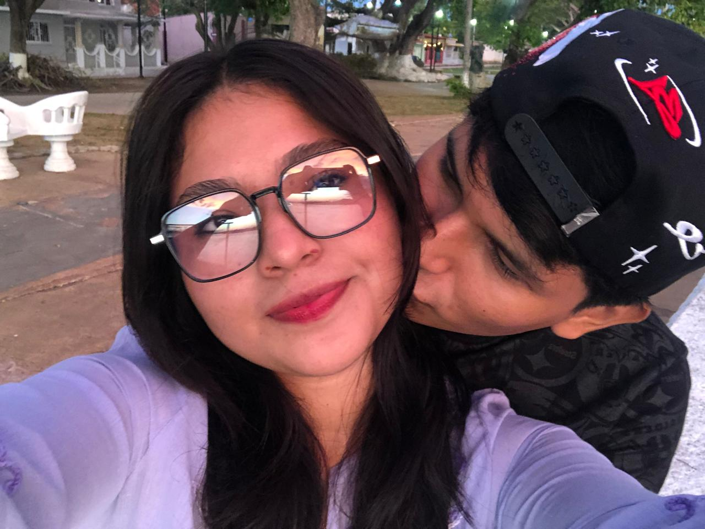
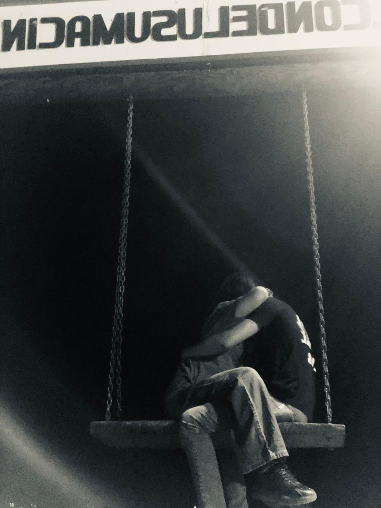
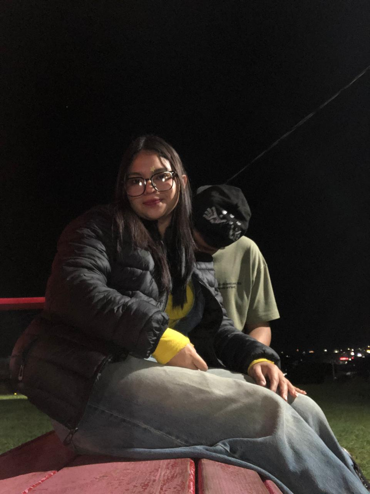
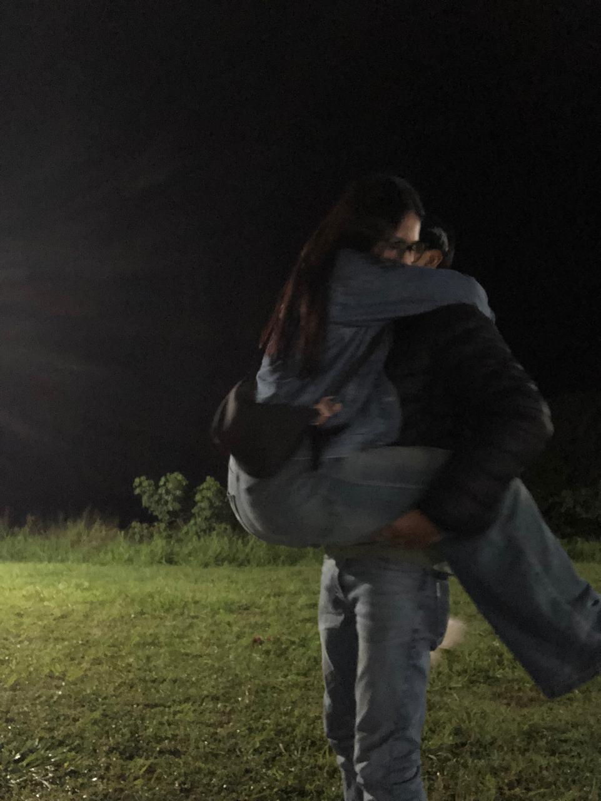
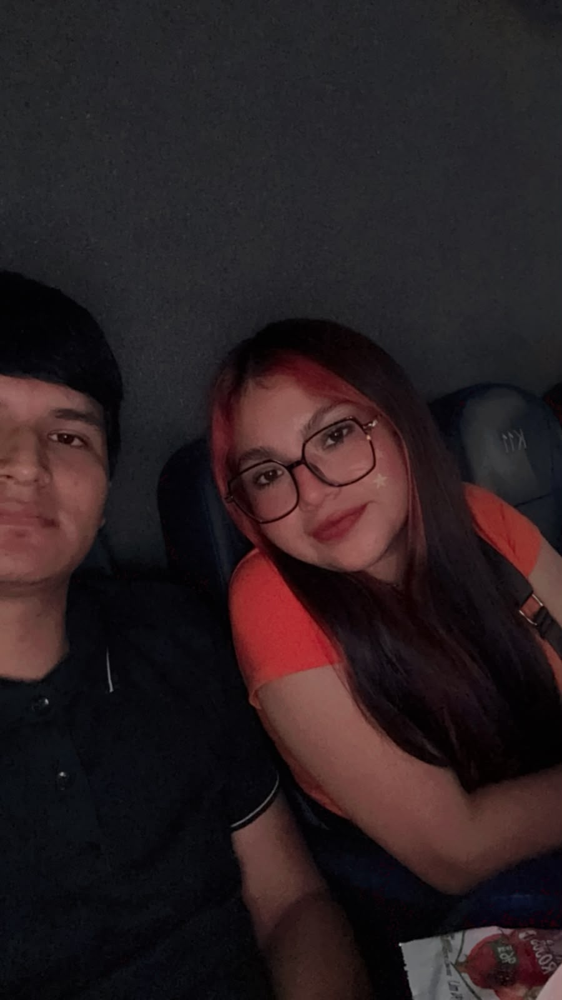
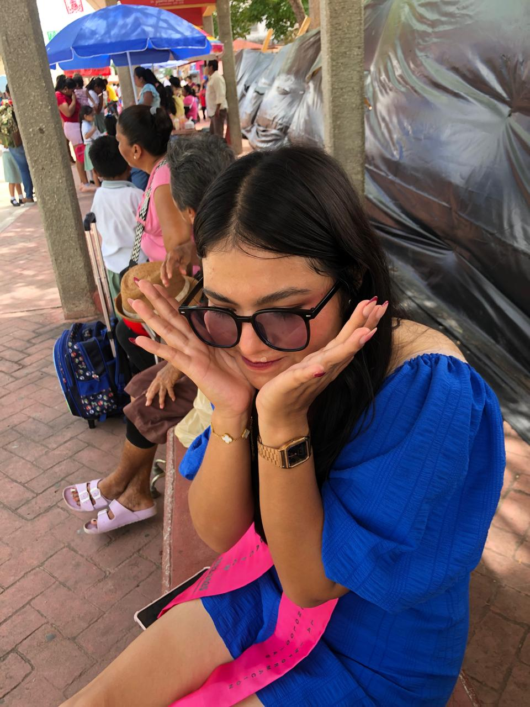

Para ti.
No hice esta página para cambiar tu decisión.
La hice porque existen palabras que nunca supe decir
cuando todavía tenía la oportunidad.
Solo quiero dejar aquí aquello que siempre debí expresar.
El comienzo
El día en que comenzó todo.
Este fue uno de esos momentos que, sin saberlo,
terminaría convirtiéndose en un recuerdo muy importante para mí vida.
A veces uno no se da cuenta de lo importantes que son ciertos momentos y las personas hasta que existe la posibilidad de perderlas.
Este video guarda uno de esos momentos para mí.
Fue tu cumpleaños, fue nuestra primera salida y fue el inicio de una etapa que significó mucho en mi vida. En ese momento no sabía todo lo que iba a venir, tanto lo bueno como lo malo, ni cuánto iba a llegar a valorar cada pequeño instante que compartimos.
Sé que en algún momento pudiste sentir que no te valoré como merecías, y entiendo por qué lo sentiste así. Tal vez muchas veces no supe demostrarlo de la manera correcta, pero hubo momentos en los que realmente fuiste alguien muy importante para mí.
Hoy veo este video como un recuerdo muy especial y lo miro con mucho cariño, pero también con mucha reflexión. Porque sé que una historia no solo está formada por los momentos bonitos; también por las decisiones, los errores y todas esas cosas que pude haber hecho mejor.
Hice esta página no para cambiar tu decisión, ni para intentar borrar lo que pasó. Sé que hay heridas que no se arreglan solamente con palabras, y sé que hubo momentos donde te fallé.
La hice porque hay cosas que nunca supe expresar de la manera correcta. Porque aunque cometí errores, lo que vivimos fue real para mí, y tú fuiste una persona muy importante en mi vida.
Porque antes de todo lo que pasó, antes de los errores y de los momentos difíciles, también existió una historia.
Momentos que fueron reales, momentos que me hicieron feliz y recuerdos que, aunque el tiempo pase, siempre voy a guardar con mucho cariño, en mi mente y corazón.






No comparto estos recuerdos para quedarme en el pasado, ni para causarte dolor ni más daño, sino porque forman parte de una etapa linda que siempre tendrá un lugar importante en mi vida.
Lo que significaste
Hay personas que llegan a nuestra vida y, sin darnos cuenta,
terminan convirtiéndose en alguien mucho más importante de lo que imaginábamos.
Tú fuiste una de esas personas para mí.
Siempre admiré la persona que eres. La manera en la que ves la vida,
la forma en la que tratas a los demás y esa esencia tan bonita que tienes.
Eres de esas personas que no se encuentran fácilmente,
de esas personas que parecen existir una entre un millón.
Admiro tu forma de ser, tu corazón, tu lealtad y esa manera tan tuya
de entregar amor de una forma sincera.
Siempre vi en ti algo especial, algo que no era solamente lo que hacías por mí,
sino lo que transmitías como persona.
Ese brillo que tenías, esa forma de hacer sentir bien a quienes estaban a tu alrededor
y esa nobleza que muchas veces demostrabas incluso en momentos difíciles.
Sé que hubo cosas donde no supe valorar todo eso como debía.
Sé que muchas fueron muchas actitudes que no estuvieron a la altura de la persona
que tenía a mi lado, y decir esto no es una forma de justificarme,
porque sé que mis errores tuvieron consecuencias.
Pero si hay algo que quiero que quede claro,
es que nunca dejé de reconocer la gran persona que eres.
Me diste un amor real, un cariño sincero y una parte de ti que no cualquiera entrega.
Aunque no siempre supe responder de la manera correcta,
hoy puedo mirar atrás y entender el valor de todo eso.
Para mí fuiste una persona increíble,
alguien que dejó una huella muy grande en mi vida
y alguien a quien siempre voy a admirar por quien eres.
Lo que aprendí
Hay errores que uno realmente entiende cuando deja de ver solamente lo que perdió y empieza a ver todo lo que pudo haber lastimado.
Durante mucho tiempo pensé que amar a alguien era suficiente. Pensaba que mientras mis sentimientos fueran reales, eso bastaba para demostrar lo importante que era esa persona para mí.
Pero hoy entiendo que estaba equivocado.
Amar a alguien no solamente es sentir cariño, decir palabras bonitas o querer estar con esa persona. Amar también es cuidar, respetar, elegir, poner límites y pensar en cómo nuestras acciones pueden afectar a quien tenemos al lado.
Y en eso fallé.
Sé que hubo momentos donde no te di el lugar que merecías. Sé que hubo momentos donde, teniendo a una persona increíble conmigo, no supe valorar completamente lo que tenía.
Y decir esto no es para justificarme, porque no hay una explicación que pueda borrar el daño que hice.
No quiero esconder mis errores detrás de ninguna situación ni buscar una forma de hacer que parezca menos grave.
La realidad es que te lastimé.
Y lo más difícil de aceptar es saber que la persona que más merecía sentirse segura conmigo fue precisamente la persona a la que terminé causándole dolor.
Sé que no solamente perdí momentos contigo, también lastimé algo mucho más difícil de recuperar: tu confianza.
Y entiendo por qué.
Entiendo que después de escuchar palabras, promesas y explicaciones, sea difícil volver a creer.
Entiendo que tal vez una parte de ti ya no pueda mirar las cosas de la misma manera, porque yo mismo hice que esas palabras perdieran valor cuando mis acciones no estuvieron a la altura.
Ese es uno de los aprendizajes más grandes que me llevo.
Un cambio verdadero no se demuestra diciendo "voy a cambiar". Un cambio verdadero se demuestra cuando nadie te está viendo, cuando tienes que tomar decisiones diferentes y cuando eliges hacer las cosas bien aunque sea más difícil.
Sé que antes pude decir muchas cosas y no cumplirlas como debía. Sé que fallé más de una vez y que por eso ahora decirte que será diferente puede sonar vacío.
Por eso no quiero pedirte que me creas solamente por leer esto.
No quiero que esta página sea otra promesa más.
Quiero que, si algún día puedes ver algo diferente en mí, sea por mis acciones, por mi forma de actuar y por la persona en la que estoy intentando convertirme.
Porque algo que entendí demasiado tarde es que tenía a mi lado a una persona que realmente valía la pena.
Una persona que me dio amor sincero, paciencia, comprensión y una parte de ella que no cualquiera entrega.
Una persona que, incluso con mis errores, muchas veces intentó estar ahí.
Y duele reconocer que mientras tú me estabas dando cosas tan valiosas, yo no siempre supe responder de la manera que merecías.
Tú no eras una persona cualquiera en mi vida.
Eras alguien que yo admiraba profundamente.
Admiraba tu forma de ser, tu corazón, tu manera de querer, tu lealtad y esa esencia tan bonita que tienes.
Siempre vi en ti algo especial, algo difícil de encontrar.
Eres de esas personas que no aparecen todos los días.
Y creo que una de las cosas que más me duele es saber que tuve enfrente a alguien tan increíble y que muchas veces mis propias inseguridades, mis errores y mis malas decisiones no me dejaron demostrarte todo el valor que tenías para mí.
Hoy entiendo que no quiero ser una persona que ama solamente cuando tiene miedo de perder.
Quiero aprender a amar de una manera más madura. Quiero ser alguien que cuide, que escuche, que valore y que haga sentir tranquila a la persona que tiene a su lado.
Quiero dejar atrás esa versión de mí que terminó dañando algo que realmente era importante.
No porque quiera aparentar ser alguien diferente, sino porque entendí que hay cosas en mí que necesitaban cambiar desde hace mucho tiempo.
Y aunque me duele aceptar que quizá llegué a entender muchas cosas demasiado tarde, también agradezco haber podido abrir los ojos.
Porque gracias a ti entendí cosas de mí que antes no quería ver.
Me hiciste conocer una forma de amor que quizá no supe valorar completamente en su momento.
Me enseñaste lo que significa tener a alguien que realmente está presente.
Y aunque hoy las cosas sean difíciles, eso nunca va a cambiar el lugar que tienes en mi vida.
No sé qué pase después de esto.
No quiero presionarte, no quiero pedirte que sanes más rápido ni quiero hacerte sentir responsable de mis sentimientos.
Sé que tú también tienes heridas que sanar. Sé que después de todo lo ocurrido necesitas tiempo, tranquilidad y volver a sentirte bien contigo misma.
Y yo también tengo un camino que recorrer.
Tengo que demostrarme a mí mismo que puedo ser mejor, que puedo actuar diferente y que puedo convertirme en alguien de quien también pueda sentirme orgulloso.
Pero quiero que sepas algo:
Si alguna vez existe una oportunidad de empezar de una manera diferente, no quiero que sea desde las mismas palabras de antes.
Quiero que sea desde hechos.
Desde respeto.
Desde paciencia.
Desde una versión de mí que realmente aprendió.
Porque aunque hoy me duele mucho imaginar una vida donde ya no estés, también entiendo que el amor no se trata de aferrarse a alguien, sino de querer lo mejor para esa persona incluso cuando las cosas son difíciles.
Solo quiero que sepas que eres alguien que marcó mi vida.
Que fuiste, eres y siempre serás una persona muy especial para mí.
Y si este fuera el último mensaje que pueda dejarte, quiero que al menos te quedes con algo verdadero:
Que te quise.
Que te admiro.
Que reconozco mis errores.
Y que esta vez no quiero demostrarlo con palabras, sino con la persona que decida ser a partir de ahora.
Gracias.
No sé si este sea el final de nuestra historia o solamente el final de una etapa que nos cambió a los dos.
Pero si algo tengo claro, es que no quería irme sin dejarte estas palabras.
Gracias por haber llegado a mi vida.
Gracias por cada momento, por cada risa, por cada abrazo, por cada conversación y por cada instante en el que me permitiste formar parte de tu mundo.
Gracias por la persona que fuiste conmigo, por el amor que me diste y por todas esas cosas que quizá en su momento no supe valorar como debía.
Sé que cometí errores. Sé que hubo cosas que lastimaron tu corazón y entiendo que algunas heridas necesitan tiempo para sanar.
No espero que esta página borre lo que pasó, ni que unas palabras arreglen todo lo que se rompió.
Solo quería que supieras que detrás de todo esto existe alguien que finalmente entendió muchas cosas, alguien que reconoce sus errores y que quiere aprender de ellos.
Si la vida nos permite volver a encontrarnos de una manera diferente, quiero que sea desde algo nuevo, desde hechos y no solamente palabras.
Pero si este es el camino que debemos tomar, también quiero que sepas que siempre voy a desearte lo mejor.
Siempre voy a admirar la persona que eres, tu corazón y esa forma tan especial que tienes de ser.
Me quedo con lo bonito, con lo que aprendí y con la fortuna de haber coincidido contigo.
Porque aunque nuestra historia haya tenido momentos difíciles, para mí siempre será una historia que tuvo valor.
Gracias por existir en mi vida.
Gracias por haber sido una persona tan importante para mí.
Y pase lo que pase después de esto, siempre voy a recordar que una vez tuve la oportunidad de conocer a alguien verdaderamente especial.